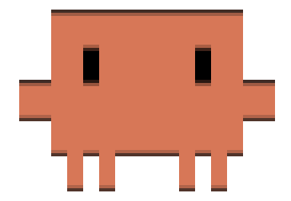
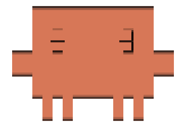
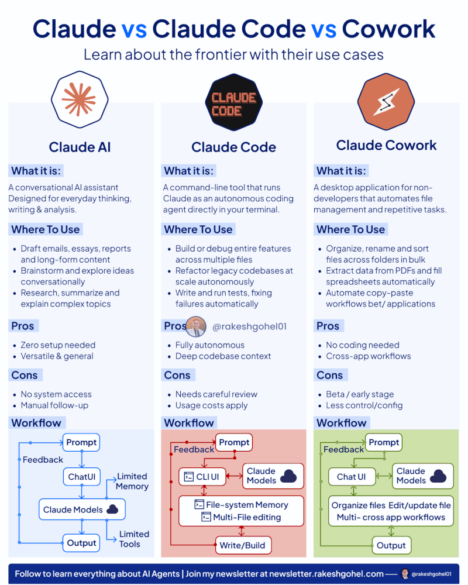
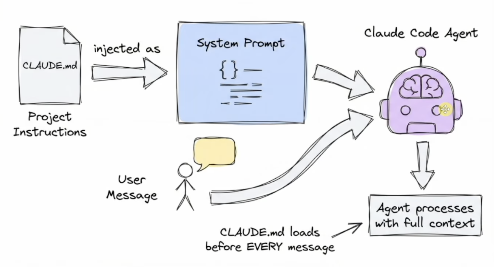

Fact 1
Claude reads instructions from multiple scopes
./CLAUDE.mdis the team-shared project layer.~/.claude/CLAUDE.mdcarries personal defaults across repos.- Path-specific rules can live under
.claude/rules/for narrower guidance.


Intermediate — Configuring Claude Code for Your Team
📅 Tuesday, 17 March 2026 · 🕑 11:30 AM – 12:30 PM
Presented by Riyaj Shaikh
Persistent project instructions & team standards
How Claude learns & retains context across sessions
Compaction, rewind & the checkpoint system
Connect Claude to external tools & APIs
Auto-format, notifications & file protection

Persistent project instructions & team standards that Claude reads every session
CLAUDE.md./CLAUDE.md is the team-shared project layer.~/.claude/CLAUDE.md carries personal defaults across repos..claude/rules/ for narrower guidance.@path references to bring in architecture docs, runbooks, and API contracts.CLAUDE.md files fail from duplication/init output should be edited down, not shipped untouched.CLAUDE.md, Copilot instructions, Cursor rules, Windsurf rules, and AGENTS.md, including cross-tool duplication.
Signal-to-noise, specificity, guardrails, freshness, and avoiding instructions the agent can already infer from code or config.
Weak context files add cost and noise. Strong ones keep only non-discoverable project knowledge plus a few hard safety constraints.
Short enough to follow, specific enough to matter.
Claude saves notes for itself — build commands, debugging insights, code style preferences
~/.claude/projects/<project>/memory/debugging.md, api-conventions.md) loaded on demand/memory — browse, edit, toggle auto memory| CLAUDE.md | Auto Memory | |
|---|---|---|
| Who writes | You | Claude |
| Contains | Instructions & rules | Learnings |
| Loaded | Full file, every session | First 200 lines |
Understanding how Claude manages its context window — and how you stay in control

/compact [focus] — manually compress with optional focus/context — see what's using space right nowEsc Esc — rewind to a previous checkpointBefore every file edit, current state is saved
Claude makes changes to your code
Tests run, results checked
Esc×2 to restore code, conversation, or both
Pro tip: Set CLAUDE_AUTOCOMPACT_PCT_OVERRIDE to control when auto-compaction fires (1–100%). Lower values compact earlier, preserving more recent context.
8 Strategic Tips for AI Development
Project constitution with architecture, commands, and workflows.
60% reductionResearch → Planning → Implementation in separate phases.
Prevents driftSave research to JSON, reference during implementation.
Clean focusUse file:line syntax like src/auth/login.ts:45-67
Connect only essential MCP servers per task phase.
40% faster responsesIsolated context windows for exploration and research tasks.
93% context savedPre-loaded specialists: /commit, /xlsx, /frontend-design
60-70% compressionStart fresh conversations when switching between tasks.
Maintains focusConnect Claude to external tools, databases, and APIs through an open standard
.mcp.json in repoMCP servers are bridges to external tools and data sources. They connect AI assistants like Claude Code to systems where data lives — databases, APIs, business tools, and development environments — replacing fragmented integrations with a universal protocol.
Connect to external APIs, SaaS platforms, cloud services
Databases, dev tools, monitoring, CI/CD pipelines
Pre-built servers for GitHub, Slack, Postgres, Sentry, etc.
| Avoid | Mistake |
|---|---|
| ✗ | Enabling all MCP servers at once (context explosion) |
| ✗ | Hardcoding API keys in configuration |
| ✗ | Using MCP for internal operations (use native tools) |
| ✗ | Not setting appropriate read/write permissions |
/mcp to interactively manage servers. Disable servers you're not actively using to keep your context window lean.
Deterministic shell commands that fire at lifecycle events — auto-format, notify, protect
| Hook Event | Key Question | When to Use |
|---|---|---|
SessionStart |
Do I need to load initial context or set up the environment? | Initialize session with project context, environment variables, or run setup scripts at startup |
UserPromptSubmit |
Should I add more context or validate this prompt? | Enhance user prompts with additional information, or validate/block prompts before Claude processes them |
PermissionRequest |
Should I auto-approve or deny this permission? | Automatically handle permission dialogs without user interaction, or log permission requests for auditing |
PreToolUse |
Should I allow, modify, or block this tool execution? | Fine-grained control over tool execution — modify parameters or enforce security policies before tools run |
PostToolUse |
Do I need to validate results or provide feedback? | Auto-process tool results (e.g., format code, run linters) or provide feedback to Claude about what happened |
Notification |
Should I notify the user in a specific way? | Customize how Claude Code sends notifications (e.g., desktop alerts, sounds, logging) |
Stop |
Did Claude complete all tasks or should it continue? | Verify task completion, check for errors, or force Claude to continue working on unfinished tasks |
SubagentStop |
Did the subagent finish its work or does it need to do more? | Validate subagent completeness — ensure subagents fully complete their assigned tasks before stopping |
PreCompact |
Do I need to save information before compacting context? | Preserve important context or state before Claude compacts the conversation history |
SessionEnd |
Should I clean up or save session statistics? | Perform cleanup tasks, save analytics, generate reports, or archive conversation data at session end |
command (shell script), prompt (LLM decision), http (POST to endpoint), agent (subagent with tools)
Let's configure Claude Code for your team.
Riyaj Shaikh · riyaj_shaikh@epam.com
Docs: code.claude.com/docs · MCP: modelcontextprotocol.io